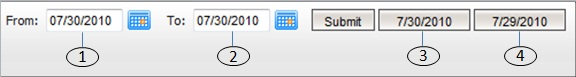

大部分的報告包含以下的控制日期範圍 (選擇)。

圖 1
- [1] 從日期: 選擇報告的開始日期。
- [2] 到日期: 選擇報告的結束日期。
- [3] 當前日期: 快捷鍵以查看當前的報告。
- [4] 昨日日期: 快捷鍵以查看昨日的報告。
要查看報告, 指定所需的日期然後點擊 "提交" 鍵。
2. 輸贏,佣金,總投注額,未完成交易
- Positive: indicates a winning amount or the one that the number owner can get from downline or upline.
- Negative: indicates a losing amount or the one that the number owner needs to pay to downline or upline.
- Odds = -0.9, Stake = 100 then Outstanding = 90.
- Odds = 0.9, Stake = 100 then Outstanding = 100.
3. 導出至excel
若在屏幕上出現Excel圖標  點擊它將導出excel文件格式的報告。
點擊它將導出excel文件格式的報告。
4. 下線/上線
- 下線: 屬於上述賬號的賬戶 (等)。
- 上線: 上述賬號的母賬號。
5. 賠率
- 若 賠率 < 0
- 如果會員贏那麼賠率 = 1。
- 如果會員輸那麼賠率 = |當前賠率|。 - 若 賠率 > 0
- 如果會員贏那麼賠率 = 當前賠率。
- 如果會員輸那麼賠率 = 1。 - 如果投注類別為波膽, 1x2, 總進球, 半場/全場, 優勝冠軍, 混合過關, 最先得分/最後得分
- 如果會員贏那麼賠率 = 當前賠率 - 1.
- 如果會員輸那麼賠率 = 1.